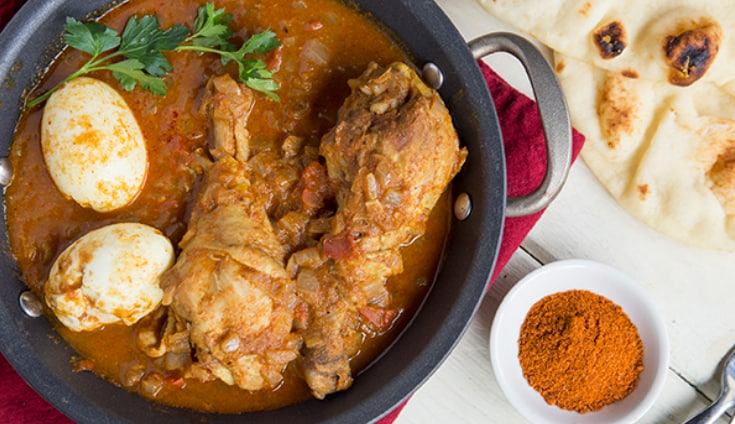

DORO WET
Doro wet is a famous and unique Ethiopian dish that takes talent and a skill and huge time that may even last for days to make.
It wouldn't be an exajuration if one claims that this is one of the favorite dish of all Ethiopians.
This dish is mostly prepared for special ceremonies and holidays due to its expensiveness interms of both money and time.
INGREDIENTS
- Chicken
- Onions
- Garlic
- Oil
- Berbere
- Eggs
- Butter